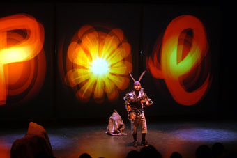

| Ars Electronica: interface futures Kate Richards  Ars Electronica is revered in the annals of new media arts and theory, and for its role in the European, Oceanic and North American new media art scenes. Packed into 5 days at Linz, about an hour and a half from Vienna and straddling the River Danube, the event comprises a conference, an exhibition at the Ars Electronica Museum of the Future, the Prix at the OK Centruum, electronic theatre and live performance. Linz is small and it’s easy to flow between the riverside and downtown venues while media arts lay an incongruous internationalist map onto the medieval city. The conference is now rather institutionalised and themed (this year: Code = art, code = law, code = life). Among the exhibitions and performances there are 3 threads I want to mention: realtime video and audio manipulation; multi-user environments; and developments in tactile user interfaces. Realtime manipulation of video and audio signal flow is a prevalent techné. The Cinema Fabrique (Justin Manor, USA) is a gesture-controlled, hardware/software environment for single-person improvisation. Holding a section of the interface in each hand, the visitor can choose, filter, scratch, loop and otherwise manipulate projected pop culture video/audio sequences. The 2-handed interface is enticing—it encourages expressive, free-form movement and a dance approach to interactivity. The software artists TMEMA (Golan Levin, Zachary Leiberman USA) in collaboration with voice artists Jaap Blonk (NL) and Joan La Barbara (USA), performed the playful Messa di Voce. The piece is written in custom code developed during a residency at Ars Electronica, and is based on speech recognition algorithms. In what was more a series of set pieces than a fully realised performance, the vocalists were tracked spatially and their utterances analysed in real time. The system synthesises and outputs graphics in response—so Blonk performs his virtuosic vocals and the graphically rendered bubbles projected around his head are pushed up and suspended by the force of his breath. While the possibilities of the technical arrangements are very inspiring, I had to ask what creative and aesthetic development has been sacrificed for the complexity of the software development. A wonderfully realised live performance with interactivity was POL, a Mechatronic Performance by Marcel-li Antunez Rocha (Spain). Two performers with exo-skeletal apparatus drive the fable of a rabbit’s search for love; performers’ action and voice, transcoded by the exo-skeleton, manipulate robotic offsiders, sound and projections. The complex, 3 channel Flash animations are synthesised into a retro-futuristic trope of mythical creatures, Bosch-like scapes and scenarios of sex, death and betrayal. The robotic and the cybernetic merge with an aesthetic of baroque intensity, evoking various origins of the abject and disembodied subject: surrealism, 1920s futurism, medievalism and collective fable. Multiuser environments provide a challenge to new media artists and designers. Instant City (Sybille Hauert, Daniel Reichmuth, CH) is developed in Max/MSP. A very tactile interface helps—visitors stand around a square plinth on which they arrange acrylic blocks in architectural forms—the ‘buildings’ of the instant city. The placement and mass of the blocks manipulates the sound composition (visitors choose between 6). The installation successfully brings visitors together across the top of the plinth: the acrylic blocks, lovely in their own sandblasted way, are non-threatening. It is easy to play with their manipulating effect and to tweak the compositions with a degree of finesse. Access by Marie Sester (France) allows more freeform audience response. A motion-tracking spotlight attaches itself to a passerby and follows them around the gallery. A simple idea, which has complex interactivity affect (people become self-conscious about ‘being in the spotlight’ and probably about the simplicity of the metaphor too). Why am I grinning so foolishly? Visitors become inventive—playing tag with the light, and with other potential ‘subjects’, pushing the installation to its limits. Access plays with notions of light as sprite, the audience as focus of attention, and an anthropomorphism we cannot help but bring to animated objects. In Pockets Full of Memories (George Legrady, USA), visitors scan an object of their choice and enter associated metadata into a database. Throughout the duration of the exhibition the database grows and is continually reconfigured (and projected) as an emergent system using a Kohonen self-organising map algorithm. Although employing a single user interface, the installation evokes real world consciousness of being and contributing in a system with others, in which we nevertheless aim to make an individual mark. Can you see me now? (Blast Theory and The Mixed Reality Lab, University of Nottingham, UK) is an addition to an important body of multi-user performance works. CUSMN operates in the non-private, non-public cultural spaces emerging around wireless communications like mobile phones, GPS and 3G. ‘Real’ players on the street and online players inhabit the city and a virtual overlay—“the players online and the runners in the street enter into a relationship that is adversarial, playful and ultimately filled with pathos.” A crucial feature of Blast Theory projects is the ability to extend user and audience affect outside the game—rather than delimiting our consciousness to the stereotypical and virtual, the gameplay pushes us to understand aspects of ourselves, our communities and social responsibility. This is partially achieved by the very visceral gameplay—in CUSMN the players and gameplay self-generate affects of pursuer and pursued. In a new work, Uncle Joe, players are encouraged to bud Joe, players are encouraged to buddy up and commit to long term mutual support outside the game, without any mediation by the organisers. It was encouraging to see Blast Theory awarded the Prix Ars Electronica Golder Nica, which has in the past lauded some commercial, apolitical projects. Developments in tactical user interface were particularly in evidence at the Ars Electronica Centre. Many of these applications are prototypical and easily understood as collaborative production tools. However the possibility of artistic application imbues them with extra frisson. The Audio Pad (James Patten, Ben Recht, MIT, USA) enables sole or collaborative users to compose using freely mobile discs that trigger and manipulate predetermined audio compositional variables (eg timbre and pitch). The interface is very attractive, fluid and responsive. Also developed at MIT, the SAND TRAY tool enables multiple users to model interdependencies in earth science, engineering or hydraulic projects using a tray of coarse sand as the interface. Depending on how the sand is modelled—add a hill, flatten a mound—the effects on height, topography, water flow and temperature are calculated and projected back onto the sand in realtime. These innovations in tactical and multi-user interface address current issues about collaborative work process and the role of interactivity. Other displays use sound as data input, and many visitors were fascinated by Protrude, flow by Sachiko Kodama and Minako Takeno (Japan), an installation of strongly magnetic fluid which responds to sound inputs. An attempt to model matter freely, as well as express wild and organic shapes, the work responds to synchronous sound by creating 3D patterns of splitting, clustering, flowing or dripping. Finally, a whimsical work Earth Core Laboratory and Elf Scan (Agnes Meyer-Brandis, Germany) encourages a very careful, delicate form of tactical user interactivity. Based on the conceit that mineral-dwelling elves carry on a complex, humanoid life within a parallel universe of mineral cores, the work demands visitors very carefully scan the cores with some pseudo-scientific gear. The more careful, delicate and composed your search, the steadier your hand, the greater chance of seeing the little elf vignettes.
Ars Electronica, directors Gerfried Stocker & Christine Schopf, Linz, Austria, Sept 6-11
|
*copyright RealTime; http://www.realtimearts.net/*